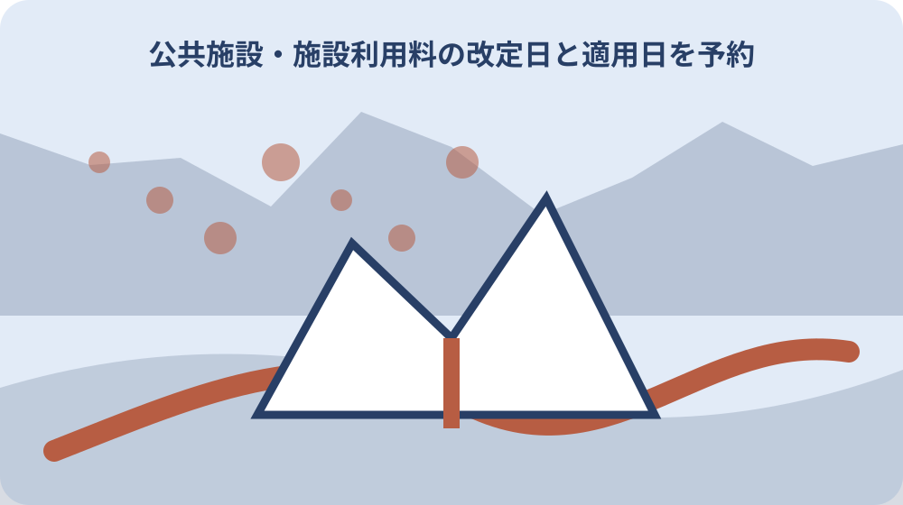

先に結論を確認する
この記事の答え：できません。改定日は料金表の基準日ですが、利用施設、時間区分、利用目的、住所区分、冷暖房、備品などで額が変わります。利用日直前に現行表と個別条件を文化会館へ確認します。
森町で最初に照合する条件：料金改定日、公式ページ更新日、仮予約日、申請書提出日、許可日、利用日を別欄にする。
改定日・更新日・適用日を三つの欄へ分ける
森町文化会館の料金ページは、消費税率改正に伴い2019年10月1日から使用料が改定されたと明記しています。一方、ページの更新日は2025年5月18日です。改定日は料金が変わった基準、更新日はウェブ情報が手直しされた日であり、同じ日付ではありません。
予約台帳には、料金表の改定日、参照ページの更新日、個別予約へ適用される日を三列で置きます。第三列は公式ページから機械的に埋めません。利用日や申請日が改定をまたぐ時は、文化会館へ案件を示し、どの料金表を使うか尋ね、回答日と回答者を記録します。
料金表を保存する時はURL、確認日、施設名、表の見出しを一組にします。画面の金額だけを切り取ると、その数字が平日か休日か、午前か全日か、加算前か後かが分かりません。PDFや画面写真には台帳の案件番号を付け、後で同じ根拠へ戻れるようにします。
適用日が公式本文だけで分からない場合は、未確認のまま空欄にします。「現在のページに載っているから申込時にも同額だったはず」と逆算しません。確認できた事実と個別回答を分けることが、団体内の精算や次年度の引継ぎで最も重要です。
問い合わせと仮予約を予約完了に数えない
森町公式の申請手順は、まず文化会館ホームページまたは電話で空き状況を確認し、利用希望日を問い合わせる流れです。しかし、この段階では予約が完了していないと明記されています。台帳の状態欄を「問い合わせ」「仮予約」「申請提出」「許可確認」に分けます。
電話した日には、希望施設、利用日、時間区分、催しの名称、対応者、次に必要な書類を記録します。「空いている」と「押さえられている」を同じ印で扱わず、仮予約の有効条件や期限を聞いた場合は回答をそのまま残します。公式にない期限を団体の慣例で作らないようにします。
複数候補日を尋ねた時は、一行に詰め込まず候補ごとに仮番号を振ります。第一希望を申請したら、他候補の状態を取消または未申請へ更新します。担当者以外が台帳を見ても、どの日に会場へ行ってよいのか、まだ決定していないのかが判別できる形にします。
ウェブの予約状況も確認時点の情報です。画面を見た時刻と電話確認を別に記し、空き表示だけで出演者や参加者へ確定連絡をしません。行事案内、印刷、移動手配など費用が発生する前に、使用許可へ進むための申請書と期限を確認します。
大・小ホール・その他施設で申請期間を分ける
使用許可の受付開始は、該当月の1日午前9時で、1日が休館日ならその月最初の開館日です。ただし、何か月前から申請できるかは施設ごとに違います。大ホールは使用日の12か月前、小ホールは6か月前、その他施設は3か月前からです。
受付終了も同じではありません。大ホールは使用日の30日前、小ホールとその他施設は5日前までと案内されています。複数室を同日に使う催しでは、最も早い締切だけで一括判断せず、各施設の開始日と終了日を台帳へ並べ、会館へ一括申請の扱いを確認します。
月の日数や休館日が絡むため、単に三百六十五日前と置き換えません。利用希望日、受付開始の対象月、月初の開館日をカレンダーで確認し、問い合わせた日を添えます。先着順や同時申請時の扱いなど公式ページに書かれていない条件は、文化会館の回答を待ちます。
締切間際は書類の不備を直す時間が限られます。団体名、責任者、催し内容、使用施設、時間区分を早めにそろえますが、記入例を正式様式として提出しないよう注意します。公式案内は記入例と正規様式が異なると説明しているため、様式取得日も残します。
申請書提出日と使用許可を同じ案件番号で結ぶ
申請書を出した日だけで全手続きが終わったとは扱いません。案件番号を一つ作り、空き確認、仮予約、申請書、使用許可に関する書類、納付書、支払控えを順に結びます。紙は同じファイル、データは同じフォルダーに置き、名称へ利用日を入れます。
申請書提出時には、提出方法、提出先、受領を確認した人、差し替えの有無を記録します。メール送信や郵送を選べるかはページの表現だけから推測せず、文化会館へ確認します。窓口で控えが得られない場合も、提出した版の写しと日付を手元へ残します。
許可後に催し内容、時間、設備が変わる場合は、元の申請書を上書きしません。森町公式は使用変更申請書を公開しています。変更前、変更内容、連絡日、会館から示された手続き、差額の有無を別行にし、最新状態と履歴の両方を追えるようにします。
団体内の口頭連絡も台帳へ戻します。代表者が許可を受け、会計担当が納付し、当日責任者が施設を使う場合、三人が別の情報を持ちがちです。許可書の保管場所、支払期限、利用上の注意を一枚で共有し、個人のメッセージだけに証拠を残さないようにします。
基本使用料は施設と時間区分から転記する
料金表は大ホール、小ホール、リハーサル室、研修室、楽屋などで基本使用料が異なります。さらに午前9時から正午、午後1時から5時、夜間6時から9時30分、全日9時から9時30分という区分があります。金額だけでなく行と列の名称を一緒に転記します。
大・小ホールは平日と土曜・日曜・祝日でも額が異なります。予約台帳の利用日から曜日を自動表示しても、祝日の判定や休館日は別に確認します。催し本番と練習で日が違う場合は、それぞれ一行を作り、両日を一つの全日料金にまとめません。
時間区分には準備と片付けも含まれます。開演時刻だけを基準に午後枠を選ぶと、搬入や音響確認が午前へはみ出す可能性があります。当日の進行表から搬入開始、客入れ、開演、終演、撤収終了を抜き出し、必要区分を会館へ確認します。
見込額欄は、基本使用料と加算、備品、空調を分けます。この段階の合計は予算用の見込みで、納付書の請求額とは別です。料金表を転記した人と検算した人を分け、桁、休日区分、全日と各枠合計の取り違えを確認します。
入場料・営業・町外利用の加算条件を先に確定する
大・小ホールでは入場料を徴収する場合や商業宣伝・営業などを目的とする場合、基本使用料へ加算があります。入場料の有無だけを聞くのでは足りません。最高額の券種、無料招待の扱い、物販や企業案内を含む催しの目的を会館へ具体的に伝えます。
冷暖房を使う場合は、大・小ホールの基本使用料の50パーセント相当額が加算されます。夏だから自動的に加算、使わなければ必ずゼロと決めず、利用計画と当日の使用を記録します。空調分は使用後精算になる案内とも結び、予算と請求の時点を分けます。
森町民と町内に事務所・事業所を有する者以外が使用する場合は、基本使用料の20パーセント相当額が加算されます。団体名に森町が入るかではなく、申請者の住所や事務所の所在を確認します。共催者が町内でも自動的に町内区分とは断定しません。
複数の加算が重なる計算順や端数の扱いは、表の数字だけで独自計算を確定しない方が安全です。台帳には各条件をはい・いいえ・未確認で置き、会館へ示した催し概要と回答を保存します。見積額と納付書額が違えば、差の理由を確認してから団体内へ報告します。
準備・片付け・超過時間を当日の進行表へ入れる
使用時間には準備と片付けが含まれるため、出演者が舞台へいる時間だけでは足りません。搬入口を開ける時刻、機材搬入、客席設営、リハーサル、受付準備、撤収、清掃、退出を一続きで書きます。別団体の利用枠との間に作業を置けるとは限りません。
大・小ホールの超過使用は、30分当たり該当時間区分の基本使用料の20パーセント相当額が加算され、冷暖房使用料がある場合はそれを加えた額が基礎になると案内されています。超過を前提にせず、終了判断をする責任者と時計を確認します。
リハーサルや準備のための使用料は、大・小ホールでは基本使用料の50パーセントとされています。ただし本番と同じ日に連続使用する場合や附属設備の扱いは、個別計画を示して確認します。「練習」と名付ければすべて半額になると広げないようにします。
当日は予定と実績を二列で残します。予定午後9時退出、実績午後9時18分のように書き、会館へ報告した内容と精算を結びます。担当者が急いで撤収して事故を起こさないよう、安全と原状回復を優先し、超過の有無は会館の確認に従います。
施設分と備品・空調分の納付書を分ける
施設使用料は申請書提出後に納付書が発行され、使用日の前日までが支払期限です。文化会館窓口では支払えず、森町役場会計課窓口や案内された指定金融機関の窓口で納付します。台帳には納付書発行日、期限、支払先、支払日、控え番号を置きます。
大・小ホールのマイクなどの備品と空調は、利用後の精算払いです。施設利用後に納付書が発行され、発行日から2週間以内に指定金融機関窓口で支払います。施設分の前払いと同じ期限だと思わず、二枚目の納付書を待つ担当者を決めます。
設備料金は品名と単位が定められています。マイク一本、音響装置一式など、予約した数量と実際に使った数量を当日責任者が照合します。持込器具や表記外の備品を使う場合は、類似設備に準じる扱いもあるため、事前確認と利用実績を残します。
支払控えは会計年度、催し名、案件番号と結び、個人の財布や車内に置いたままにしません。前払い額、利用後精算額、返金の有無を別列にすると、総費用を後から集計できます。現金を預かった人と納付した人が違う場合は受渡日も記録します。
変更・取消時は還付条件を推測しない
森町公式は使用変更申請書と使用取消願を公開しています。また、利用者の都合でキャンセルした場合の使用料は還付できないと案内しています。空き確認の電話を取りやめる場合と、申請・納付後に使用を取り消す場合を同じ「キャンセル」にまとめません。
変更が生じたら、変更を決めた日、元の利用内容、新しい内容、文化会館へ連絡した日、必要とされた様式を記録します。施設、時間、利用目的、入場料、設備の変更は料金へ影響する可能性があります。差額や再発行を自己計算せず、会館の回答と新しい納付書を待ちます。
荒天、出演者都合、団体都合など理由が異なっても、還付の可否を過去の催しから推測しません。公式ページで明示された利用者都合の扱いを起点に、個別事情を会館へ伝えます。回答は「返るらしい」ではなく、対象金額、手続き、期限、回答日まで残します。
中止の連絡先も決めます。代表者だけが会館へ連絡し、広報担当だけが参加者へ連絡すると、施設側と参加者側の状態がずれることがあります。台帳で会館連絡、出演者連絡、参加者告知、支払処理を別々に完了確認し、未処理を見えるようにします。

条例上の使用料と個別の適用回答を混ぜない
地方自治法225条は、公の施設の利用について普通地方公共団体が使用料を徴収できる枠組みを示します。228条は使用料に関する事項を条例で定めなければならないとしています。国の法令は、森町文化会館の個別料金額や予約日ごとの適用を直接決める表ではありません。
予約台帳では、国法の根拠、森町公式の料金表、文化会館から受けた案件別回答を三層に分けます。国の条文を読んだから加算を免れる、または必ず特定額になるとは判断しません。個別料金は森町の現行案内と必要な確認に戻ります。
料金改定をまたぐ予約では、申込日、許可日、利用日のどれが基準かを公式ページの改定日だけから補いません。適用に関する経過的な扱いが別文書にあるかを会館へ尋ね、示された文書名、条項、回答を記録します。回答が口頭なら、復唱した内容と時刻を残します。
法令や料金ページは後から更新される可能性があります。台帳へURLと確認日を付け、過去案件の根拠を新しいページで上書きしないようにします。次回予約では同じ資料をそのまま再利用せず、現行ページと受付案内を再確認します。
家族や団体へ渡す予約台帳を証拠書類と結ぶ
引継ぎ用台帳の一行目には、案件番号、催し名、利用日、施設、時間区分、申請者、会場責任者、会計担当を置きます。日付欄には問い合わせ、仮予約、申請、許可、前払い、利用、利用後精算を並べます。誰か一人の記憶がなくても進行状況を読める形が目標です。
料金欄は基本額、入場料・営業の条件、町外利用、冷暖房、備品、超過、合計見込、納付書額に分けます。未使用はゼロ、まだ分からない項目は未確認とし、空欄の意味を統一します。数式を使う場合も、公式表の加算条件を人が確認する欄を残します。
証拠書類には、申請書提出版、許可関係書類、納付書、支払控え、変更申請、取消願、会館から受けた説明を登録します。ファイル名を案件番号と日付で統一し、台帳から保管場所を参照します。個人の住所や電話を共有する範囲も団体内で決めます。
催し終了後は予定と実績の差を一度だけ整理します。利用時間、設備数量、精算額、変更の有無、次回注意点を記し、過去の金額を次回の確定額にはしません。台帳は同じ催しを再現する設計図ではなく、次の担当者が公式情報を再確認できる索引として残します。
大石の視点：会場費の記録を建物利用の実務へ生かす
ここまでの改定日、申請期間、支払方法、加算条件は森町公式と国法で確認した事実です。一方、どの会場が団体に最適か、費用をどこまでかけるかは個別判断です。私は、最安額だけでなく準備から精算までの人の動きも費用として見るべきだと考えます。これは私見です。
小さな不動産業者の実務でも、建物の利用日は契約日だけでは決まりません。鍵の受渡し、搬入路、駐車、電気容量、空調、原状回復、支払者を一件へ結ぶ必要があります。文化会館の予約台帳で日付と役割を分ける考え方は、空き家の一時利用や家族会議の場所選びにも応用できます。
ただし公共施設の条件を民間物件へそのまま当てはめません。民間では所有者、賃借権、保険、境界、道路、用途、近隣への説明など別の確認があります。売却未定の実家で催しや片付けをする場合も、現地写真、鍵の保管者、参加者、費用負担を実家カルテへ残します。
私なら、料金表の数字を写す前に、誰が何のためにいつ使い、準備と片付けを誰が担うかを一枚にします。その上で公式料金、加算、支払日を照合します。今日できる一歩は、予定案件の申込日と利用日を別欄にし、文化会館へ確認する未確定事項を一つ書くことです。